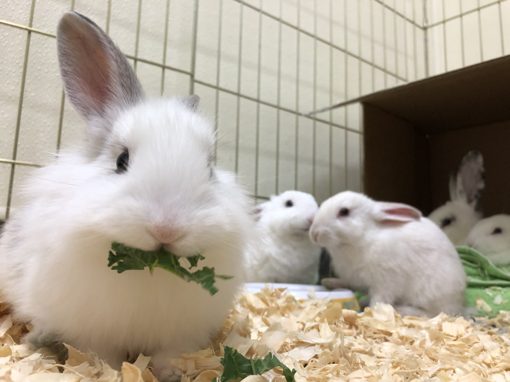
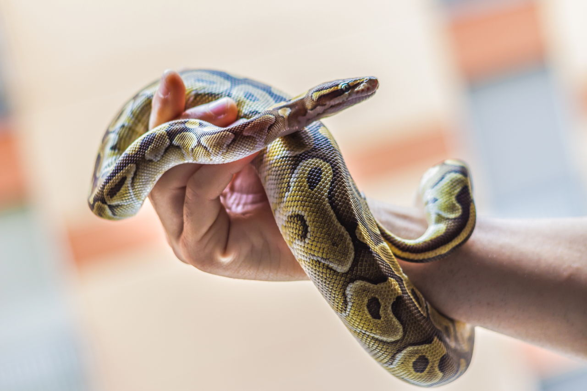

| Species |
Description |
Picture |
| Mouse |
Mice are nocturnal and very social,
and they are best kept in groups. A pair of females is the
easiest arrangement, although larger groups are fine if you
provide the cage space. |
 |
| Hamster |
Hamsters are popular pets for children. They are small rodents
that typically live about two years and are usually best if housed alone.
Hamsters come in a variety of colors and breeds. Different breeds are known
for distinctive traits. Learn about the choices before picking one out to take home: |
 |
| Gerbile |
Just like hamsters, gerbils live an average of two to three years
(although up to five years has been reported). They have a body length of about four inches
and a furry tail (unlike a rat or mouse) that is almost as long as their body (never pick a gerbil
up by that tail, though). Gerbils are very active and social so they are happier as a pair or part of a group
(get all males or all females to prevent prolific breeding). |
|
| Guinea Pig |
Guinea pigs are fairly long-lived rodents with an average lifespan of five to seven years
(up to 10 is sometimes seen). At an adult size of about 10 inches long and two to three pounds, they
are also the largest of the commonly seen pet rodents. Their size and gentle temperament have made
guinea pigs popular pets, especially for families. They rarely bite, even when stressed. They are
social so they do best when kept in pairs of the same sex, and they need a larger cage than is typically
found in the guinea pig section at the pet store. |
 g g |
| Rat |
Rats live an average of two to four years and make great pets. They are very social so it is best to keep
a same-sex pair (two males or two females). Since they are larger than most other pet rodents, with a body length of
about eight inches and a hairless tail about the same length as their body, they are easy to handle. |
|
| Ferret |
While ferrets are not for everyone, they can make great pets for the right owner. They are affectionate
and bond with their owners, quiet for a large part of the day, and there are few pets as playful as ferrets. However,
they seem to have garnered a negative image which is largely undeserved. |
|
| Rabbit |
Rabbits are also unique creatures who form tight bonds with their families, but they also have some quirks
you should know about. They require some routine vet care from a good rabbit vet and are not low maintenance pets
if you are doing things right. If you are prepared for all the unique qualities and needs of rabbits, you will be
able to fully enjoy the wonderful companionship they can offer. |
 |
Chinchilla |
Before choosing a chinchilla as a pet, you need to consider that they can live for up to 15 years.
They are lively animals and mostly nocturnal so they are not ideal as children's pets – and children need to be
zsupervised when handling them. |
|
| Hedgehog |
Hedgehogs are small, spiny, insect-eating mammals native to Europe, Asia, Africa, and New Zealand.
And while they don't exist in the wild in North America, many domesticated hedgehogs are kept as pets
stateside and are often mistaken for porcupines. However, unlike the porcupine, hedgehogs have smooth quills
similar to the bristles of a brush, making the creature a lovable pet rather than a dangerous predator. |
|
| Snakes |
Snakes are fascinating animals, and with regular handling, most of them can be quite tame as pets. However,
snakes are obviously not the right pets for everyone. They have unique requirements and should only be cared for by
those with the commitment and understanding to meet their needs. If you are new to pet snakes, find out what you
should consider before deciding to get one and what species are the best snakes for beginners. |
 |
| Frogs |
Frogs can make great pets for the right person, but frogs in the wild are facing population declines and
extinction largely as a result of human activities. Unfortunately, the pet trade is likely contributing to the
amphibian extinction crisis and the spread of a devastating infection by Chytrid fungus. For this reason, you
should only buy frogs that you are sure are captive bred locally and tested to be free of disease whenever possible.
Avoid capturing wild frogs and keeping them as pets. |
|
| Turtle |
Aquatic turtles can live in a tank or pond, in groups, and with larger fish (they’ll eat small fish).
These guys are strong swimmers and need an aquarium that’s at least 55 gallons in volume. It should have a screened
lid and a filter. Line the aquarium with gravel, which you can vacuum clean. |
|
| Bearded Dragons |
Popular as pets, bearded dragons or "beardies" are moderately sized lizards native to Australia.
While they are generally considered good pets, even for beginner reptile owners, they do have fairly complex
nutritional and environmental requirements. |
|
| Iguana |
Iguanas are certainly one of the most popular lizards to have ever been kept as a pet. Iguanas have
strict feeding and housing requirements, can grow quite large, live a long time, and can be quite strong. They
can be difficult to tame and become aggressive if not regularly handled. They are a big commitment and require
a high level of care. This is not to say that iguanas cannot make good pets but they need the proper care right
from the start and owners need to have the right expectations. Many new reptile owners do not realize how large
their lizard of choice gets, how long they live, what kind of food is needed to keep them healthy, and all of the
costs associated with these needs. As more and more people realized that iguanas are a large and long-term commitment,
they have decreased in popularity. |
 |
| Gecko |
Leopard geckos are nocturnal, ground-dwelling geckos that are generally docile and easy to tame. They do not have
the sticky toe pads like other geckos, so they do not climb walls, but unlike other geckos, they do have eyelids.
Leopard geckos are not prone to biting and are usually slow-moving. They have perky personalities and are known to be very
vocal, especially when they are hungry. |
|
| Budgie (Fancy Parakeet) |
The budgie, or parakeet, is among the smallest of the parrot species commonly kept as pets, and they are
also the most popular pet bird by a large measure—due in part to the fact that they are quite affordable. These
small parrots are exceedingly friendly and easy to tame. While they can sometimes be difficult to understand,
they are also quite capable of mimicking human speech. |
 |
| Cockatiel |
Cockatiels are among the most popular pet birds. Small parrots with a variety of color patterns and a
crest, they are attractive as well as friendly and easy to tame. Due to their small size, cockatiel care and
taming are easier than many other parrot species. They are capable of
mimicking speech, although they can be difficult to understand. However, they are quite good at whistling and can
often be taught to whistle tunes |
 |
| Cockatoo |
Cockatoos are very popular pet birds with personalities as flashy and dynamic as their crest.
While these birds may be best known for the fan of feathers that they display on tops of their heads,
there are plenty of other fun and fascinating cockatoo facts for bird lovers to focus on. |
|
| Macaw |
The Catalina macaw is a rainbow-colored parrot that is a very popular pet. In a way that few
other birds can claim, the Catalina combines the traits of the most popular macaws into one spectacularly
beautiful package. Many times, it's the Catalina's flashy colors that attract the people who adopt them. Yet,
it's their comical personalities that really draw people in. |
|
| Fish |
When you are standing there drooling over all the beautiful fish at the pet shop, remember one
word—moderation. In most cases, only two or three fish should be introduced to a tank initially. Once the nitrogen
cycle is established and the tank is stable, additional fish can be added.
However, the same rules apply when adding the next round of fish. Moderation, moderation, moderation,
you must add only a few at a time. If there is nothing else you remember when adding new fish, it’s moderation. |
|
Hermit Crab |
Hermit crabs need companionship, plenty of climbing room, substrate to bury themselves in for molting,
humidity, warm temperatures, extra shells, fresh and salt water (dechlorinated aquarium salt only), and much,
much more! Never release a captive crab back into the wild. |
|